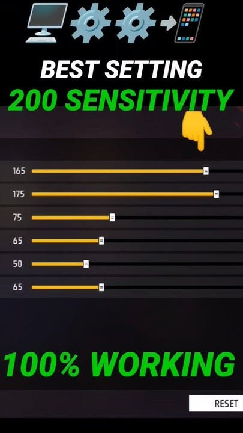

Hi Gamers!🎮
--Available all settings about Free Fire--

Here you can find sensitivity settings for different controls in Free Fire, including General, Red Dot, 2x Scope, 4x Scope, Sniper Scope, and Free Look.
Some Sensitivity Settings----

1 Russher------
🎯 General: 95
🔴 Red Dot: 90
🔭 2× Scope: 85
🔭 4× Scope: 75
🎯 Sniper Scope: 55
👀 Free Look: 80
2 Bomber---
💣 General: 90
🎯 Red Dot: 85
🔭 2× Scope: 75
🔭 4× Scope: 65
🎯 Sniper Scope: 50
👀 Free Look: 80